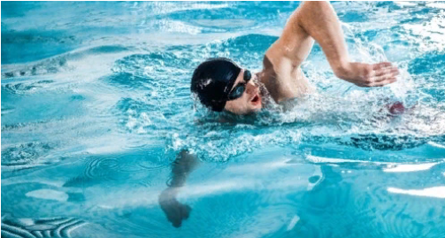
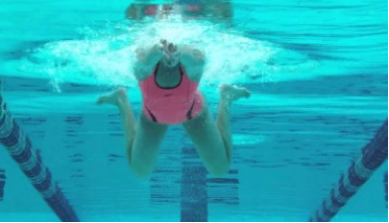
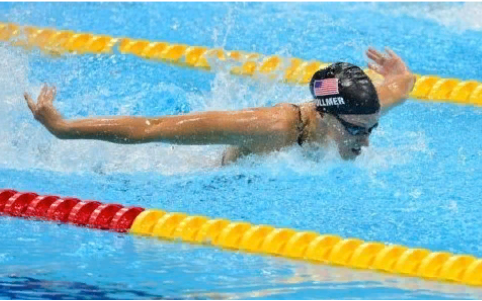

Спортивные виды плавания
Кроль
Алгоритм движений:
- Руки по очереди делают гребки:рука зацепляет воду и делает
гребок к телу, доходит до бедра, затем проносится через верх и снова
вкладывается в воду.
- Ноги также по очереди совершают махи.
- Голова опущена в воду. Выдох делается в воду носом и при
необходимости ртом, для вдоха во время гребка тело вместе с головой
поворачивается вбок, чтобы вдохнуть ртом, как показано на этом фото:
">
Брасс
Алгоритм движений:
- Руки одновременно делают гребок– подтягиваются к себе,
затем снова выбрасываются вперед.
- В момент подтягивания рук (и благодаря ему)голова и плечи
поднимаются над водой, чтобы сделать вдох. Затем лицо опускается
в воду для выдоха.
- По ходу гребка колени подтягиваются, затем в момент выброса рук
ступни и голени разводятся в стороны (колени при этом не разводятся)
иделается толчок ногами. В конечной точке толчка ступни сводятся вместе (смысл движений ступ – они как бы отталкиваются от воды,
делают гребок).

Баттерфляй
Баттерфляй (он же – “дельфин”) по праву считается самым зрелищным
стилем:
Алгоритм движений:
- Основная особенность техники – волнообразные движения,
совершаемые телом.
- Руки одновременно совершают гребок, но, в отличие от брасса,
не выбрасываются сразу же обратно, а идут до бедра, затем
выбрасываются обратно через верх. Движения рук идут синхронно с
волнообразными движениями тела.
- Ноги работают как единый “хвост”, совершающий удары
синхронно с идущей по телу волной.
- Для вдохов голова и плечиподнимаются во время гребка, затем
лицо опускается в воду для выдоха.
